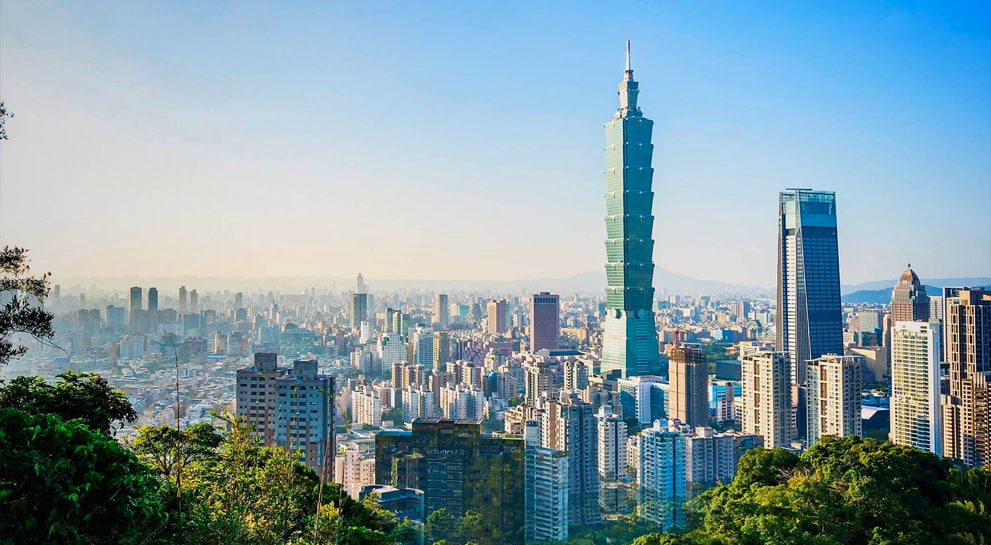

|  | |
|
2016-2020台灣永續發展期
Tourism 2020 台灣永續觀光發展方案，打造台灣為亞洲重要旅遊目的地。西元 2015 年聯合國成立 70 週年之際，發表《翻轉世界：2030年永續發展議程(Transforming our world: the 2030 Agenda for Sustainable Development)》文件，作為行動指引，著眼於人(People)、地球(Planet)、繁榮(Prosperity)、和平(Peace)、夥伴關係(Partnership)等重要聯繫，促使全球團結努力，期盼至西元2030年時能夠消除貧窮與饑餓,實現尊嚴、公正、包容的和平社會、守護地球環境與人類共榮發展，以確保當代與後世都享有安居樂業的生活。為聚焦各項努力，更提出「永續發展目標(Sustainable Development Goals, SDGs)」──包括 17 項核心目標(Goals)及 169項具體目標(Targets)，於西元 2017 年再建立 232 項指標用來衡量實踐情形。資料來源：中華民國交通部觀光局、台灣永續發展目標—行政院台灣永續發展委員會 |